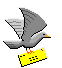

Viaje Tierra del Fuego
- Enero 2001
INDICE DE CAPITULOS
O COMO ALTERNATIVA...
Podés bajar el archivo de texto completo,
en formato PDF, sin fotos. Son 32 páginas. Marcá
aquí.
(Más rápido de bajar y más
conveniente para imprimir.)
Para mandar cualquier comentario,
opinion,
o simplemente para saber si te
gustó...

Muchas gracias
(¡Tu email no molesta!)
Volver a la Página de Selección
de Relatos
Visitar mi Página
Personal
|